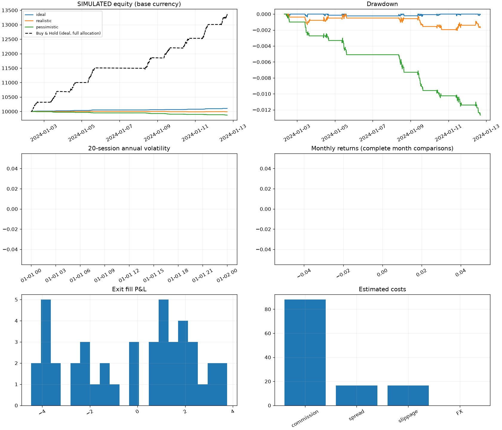

Research only. Historical performance does not guarantee future results. Las fixtures son sintéticas.
Stops observados al cierre; ejecución posterior. Posiciones finales valoradas a mercado, sin liquidación ficticia.

{
"ideal": {
"total_return": 0.01061184226084011,
"annualized_return": null,
"CAGR": null,
"annualized_volatility": 0.007603833858051246,
"Sharpe": null,
"Sortino": null,
"Calmar": null,
"max_drawdown": -0.0003709890151598616,
"average_drawdown": -6.809118345163185e-05,
"drawdown_duration_seconds": 248400.0,
"number_of_trades": 53,
"trades_per_year": null,
"win_rate": 0.7358490566037735,
"loss_rate": 0.2641509433962264,
"profit_factor": 8.658154156123667,
"expectancy": 2.0022343888378713,
"average_win": 3.0762908130751643,
"average_loss": -0.989779935823159,
"payoff_ratio": 3.1080553380956752,
"average_holding_period_seconds": 2077.3584905660377,
"turnover": 9.937775377978898,
"exposure": 0.0374658619582705,
"time_in_market": 0.39934711643090315,
"cash_usage": 0.0374658619582705,
"fees_paid": 0.0,
"commission": 0.0,
"fx_cost": 0.0,
"spread_cost": 0.0,
"slippage_cost": 0.0,
"total_costs": 0.0,
"open_positions": 0,
"warnings": [
"Synthetic/offline examples do not establish edge.",
"Trades count exit fills; partial liquidation can split a round trip.",
"Fewer than 30 daily returns: Sharpe/Sortino suppressed.",
"Less than one year: CAGR/annualized return suppressed."
],
"benchmark_return": 0.33681517739331435,
"beta": null,
"alpha_approximation": null,
"benchmark_correlation": null
},
"realistic": {
"total_return": -0.0010121235400595285,
"annualized_return": null,
"CAGR": null,
"annualized_volatility": 0.007557238057028897,
"Sharpe": null,
"Sortino": null,
"Calmar": null,
"max_drawdown": -0.0020428098384980276,
"average_drawdown": -0.0009176317939600172,
"drawdown_duration_seconds": 615900.0,
"number_of_trades": 44,
"trades_per_year": null,
"win_rate": 0.5227272727272727,
"loss_rate": 0.4772727272727273,
"profit_factor": 0.8090998812970135,
"expectancy": -0.23002807728604002,
"average_win": 1.8650978816956814,
"average_loss": -2.5246898418850683,
"payoff_ratio": 0.7387433698798819,
"average_holding_period_seconds": 2515.909090909091,
"turnover": 8.241201800715904,
"exposure": 0.037572372470721156,
"time_in_market": 0.4015233949945593,
"cash_usage": 0.037572372470721156,
"fees_paid": 88.0,
"commission": 88.0,
"fx_cost": 0.0,
"spread_cost": 16.477138048496222,
"slippage_cost": 16.48467429775822,
"total_costs": 120.96181234625445,
"open_positions": 0,
"warnings": [
"Synthetic/offline examples do not establish edge.",
"Trades count exit fills; partial liquidation can split a round trip.",
"Fewer than 30 daily returns: Sharpe/Sortino suppressed.",
"Less than one year: CAGR/annualized return suppressed."
],
"benchmark_return": 0.33681517739331435,
"beta": null,
"alpha_approximation": null,
"benchmark_correlation": null
},
"pessimistic": {
"total_return": -0.012499553295590937,
"annualized_return": null,
"CAGR": null,
"annualized_volatility": 0.010352751794498473,
"Sharpe": null,
"Sortino": null,
"Calmar": null,
"max_drawdown": -0.012660093696206576,
"average_drawdown": -0.006270610157697059,
"drawdown_duration_seconds": 883500.0,
"number_of_trades": 39,
"trades_per_year": null,
"win_rate": 0.15384615384615385,
"loss_rate": 0.8461538461538461,
"profit_factor": 0.022884995108746115,
"expectancy": -3.205013665536145,
"average_win": 0.4879197341138403,
"average_loss": -3.8764561018361423,
"payoff_ratio": 0.12586747309810364,
"average_holding_period_seconds": 2307.6923076923076,
"turnover": 7.3088072815764615,
"exposure": 0.03054715819041535,
"time_in_market": 0.3264417845484222,
"cash_usage": 0.03054715819041535,
"fees_paid": 156.0,
"commission": 156.0,
"fx_cost": 0.0,
"spread_cost": 29.0564727295138,
"slippage_cost": 29.07024674510675,
"total_costs": 214.12671947462056,
"open_positions": 0,
"warnings": [
"Synthetic/offline examples do not establish edge.",
"Trades count exit fills; partial liquidation can split a round trip.",
"Fewer than 30 daily returns: Sharpe/Sortino suppressed.",
"Less than one year: CAGR/annualized return suppressed."
],
"benchmark_return": 0.33681517739331435,
"beta": null,
"alpha_approximation": null,
"benchmark_correlation": null
},
"benchmark": {
"total_return": 0.33681517739331435,
"annualized_return": null,
"CAGR": null,
"annualized_volatility": 0.10670936445193219,
"Sharpe": null,
"Sortino": null,
"Calmar": null,
"max_drawdown": -0.004430798430457017,
"average_drawdown": -0.0005888960344682272,
"drawdown_duration_seconds": 231600.0,
"number_of_trades": 0,
"trades_per_year": null,
"win_rate": null,
"loss_rate": null,
"profit_factor": null,
"expectancy": null,
"average_win": null,
"average_loss": null,
"payoff_ratio": null,
"average_holding_period_seconds": null,
"turnover": 0.85095212390037,
"exposure": 0.983336308286408,
"time_in_market": 0.9912948857453754,
"cash_usage": 0.983336308286408,
"fees_paid": 0.0,
"commission": 0.0,
"fx_cost": 0.0,
"spread_cost": 0.0,
"slippage_cost": 0.0,
"total_costs": 0.0,
"open_positions": 1,
"warnings": [
"Synthetic/offline examples do not establish edge.",
"Trades count exit fills; partial liquidation can split a round trip.",
"Fewer than 30 daily returns: Sharpe/Sortino suppressed.",
"Less than one year: CAGR/annualized return suppressed."
]
}
}{
"run_id": "20260906T155224760504-f0fc526b",
"config": {
"strategy": {
"name": "momentum",
"timeframe": "5m",
"lookback": 6,
"atr_period": 14,
"momentum_threshold": 0.002,
"require_above_vwap": true,
"volume_ratio_min": 1.2,
"volatility_min": 0.0,
"volatility_max": 0.03,
"entry_start_minutes_after_open": 30,
"entry_end_minutes_before_close": 60,
"stop_atr_multiple": 1.5,
"take_profit_atr_multiple": 2.5,
"trailing_atr_multiple": 0.0,
"max_holding_bars": 60,
"end_of_day_exit": true,
"breakout_buffer_bps": 2.0,
"zscore_entry": -2.0,
"rsi_max": 35.0,
"allowed_regimes": []
},
"risk": {
"starting_equity": 10000.0,
"base_currency": "EUR",
"sizing": "atr",
"fixed_notional": 1000.0,
"position_size_pct": 10.0,
"risk_per_trade_pct": 0.5,
"target_annual_vol": 0.1,
"max_position_pct": 10.0,
"max_sector_exposure_pct": 40.0,
"max_total_exposure_pct": 100.0,
"max_daily_loss_pct": 2.0,
"max_drawdown_pct": 10.0,
"max_open_positions": 5,
"max_trades_per_day": 10,
"cooldown_after_losses_bars": 6,
"minimum_price": 1.0,
"minimum_average_volume": 100.0,
"maximum_spread_bps": 30.0
},
"execution": {
"mode": "realistic",
"latency_ms": 250,
"slippage_bps": 2.0,
"spread_bps": 4.0,
"impact_bps": 2.0,
"commission_bps": 1.0,
"minimum_commission": 1.0,
"fx_cost_bps": 5.0,
"max_volume_participation": 0.05
},
"allow_special_products": false,
"currency_hedged": false,
"fx_max_age_hours": 96.0
},
"config_hash": "f0fc526b572f937855aebc8a57384c4f8a69499bbc77af16dd45b4fe200450fc",
"dataset_hash": "bac8e5c94dae1c8db238c9f31ff3e5f2214a2f6a0d2e24e5088d0bb7622b5fe1",
"git_commit": null,
"software_version": "0.1.0",
"timestamp": "2026-09-06T15:52:24.761000+00:00",
"split": "research",
"provenance": {
"registry": [
{
"symbol": "DEMO",
"name": "Synthetic EUR research fixture (not a security)",
"ISIN": "ZZ0000000008",
"exchange": "Synthetic on Xetra calendar",
"mic": "XETR",
"currency": "EUR",
"country": "DE",
"listing_timezone": "Europe/Berlin",
"figi": null,
"asset_class": "equity",
"sector": "broad",
"fund_domicile": null,
"ucits": false,
"distribution_policy": null,
"ter": null,
"benchmark": null,
"inception_date": "2000-01-01",
"listing_date": "2000-01-01",
"delisting_date": null,
"known_from": "2000-01-01",
"researchable": true,
"potentially_tradeable": "unknown",
"eligibility_evidence": null,
"leveraged": false,
"inverse": false,
"aum": null,
"source": "Synthetic test identity; checksum valid, not an issued ISIN"
},
{
"symbol": "CSPX",
"name": "iShares Core S&P 500 UCITS ETF USD (Acc)",
"ISIN": "IE00B5BMR087",
"exchange": "London Stock Exchange",
"mic": "XLON",
"currency": "USD",
"country": "GB",
"listing_timezone": "Europe/London",
"figi": null,
"asset_class": "equity",
"sector": "broad",
"fund_domicile": "IE",
"ucits": true,
"distribution_policy": "accumulating",
"ter": null,
"benchmark": "S&P 500",
"inception_date": "2010-05-19",
"listing_date": "2010-09-15",
"delisting_date": null,
"known_from": "2026-09-06",
"researchable": true,
"potentially_tradeable": "unknown",
"eligibility_evidence": null,
"leveraged": false,
"inverse": false,
"aum": null,
"source": "https://www.ishares.com/uk/individual/en/products/253743/ishares-sp-500-b-ucits-etf-acc-fund"
}
],
"benchmark_config": {
"strategy": {
"name": "buy-and-hold",
"timeframe": "5m",
"lookback": 6,
"atr_period": 14,
"momentum_threshold": 0.002,
"require_above_vwap": true,
"volume_ratio_min": 1.2,
"volatility_min": 0.0,
"volatility_max": 0.03,
"entry_start_minutes_after_open": 30,
"entry_end_minutes_before_close": 60,
"stop_atr_multiple": 1.5,
"take_profit_atr_multiple": 2.5,
"trailing_atr_multiple": 0.0,
"max_holding_bars": 60,
"end_of_day_exit": true,
"breakout_buffer_bps": 2.0,
"zscore_entry": -2.0,
"rsi_max": 35.0,
"allowed_regimes": []
},
"risk": {
"starting_equity": 10000.0,
"base_currency": "EUR",
"sizing": "percentage",
"fixed_notional": 1000.0,
"position_size_pct": 100.0,
"risk_per_trade_pct": 0.5,
"target_annual_vol": 0.1,
"max_position_pct": 100.0,
"max_sector_exposure_pct": 100.0,
"max_total_exposure_pct": 100.0,
"max_daily_loss_pct": 100.0,
"max_drawdown_pct": 100.0,
"max_open_positions": 5,
"max_trades_per_day": 10,
"cooldown_after_losses_bars": 6,
"minimum_price": 1.0,
"minimum_average_volume": 100.0,
"maximum_spread_bps": 30.0
},
"execution": {
"mode": "ideal",
"latency_ms": 250,
"slippage_bps": 2.0,
"spread_bps": 4.0,
"impact_bps": 2.0,
"commission_bps": 1.0,
"minimum_commission": 1.0,
"fx_cost_bps": 5.0,
"max_volume_participation": 0.05
},
"allow_special_products": false,
"currency_hedged": false,
"fx_max_age_hours": 96.0
},
"fx_table": "{}",
"corporate_actions": []
}
}